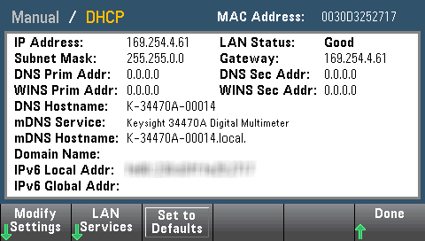

There are several parameters that you might need to set to establish network communication using the LAN interface. Primarily, you will need to establish an IP address. You might need to contact your network administrator for help in establishing communication with the LAN interface.
|
|
If your instrument has the secure (SEC) option, the instrument must be unsecured to change most LAN settings. |

Dot-notation addresses ("nnn.nnn.nnn.nnn" where "nnn" is a byte value from 0 to 255) must be expressed with care, as most PC web software interprets byte values with leading zeros as octal (base 8) numbers. For example, "192.168.020.011" is actually equivalent to decimal "192.168.16.9" because ".020" is interpreted as "16" expressed in octal, and ".011" as "9". To avoid confusion, use only decimal values from 0 to 255, with no leading zeros.